Error State Extend Kalman Filter Study
Since the ESEKF is the basic of OpenVINS(MSCKF), this page will present my study notes about it. Again, I'll avoid the math deduction to keep the mind clean.
Why we need ESEKF
Limitations of the EKF
The EKF works by linearizing the nonlinear motion and measurement models to update the mean and covariance of the state. The difference between the linear approximation and the nonlinear function is called linearization error.
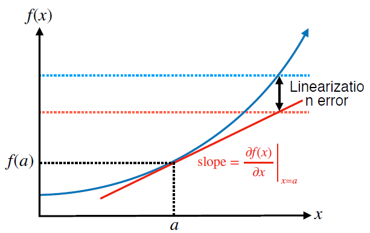
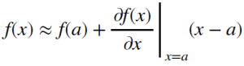
In general, linearization error depends on,
How nonlinear the function is
How far away from the operating point the linear approximation is being used
Hence, the EKF is prone to linearization error when,
The system dynamics are highly nonlinear
The sensor sampling time is slow relative how fast the system is evolving
This has two important consequences,
The estimated mean state can become very different from the true state
The estimated state covariance can fail to capture the true uncertainty in the state
EKF Limits
The EKF uses analytical local linearization and, as a result, is sensitive to linearization errors
Linearization error can cause the estimator to be overconfident in a wrong answer!
What if we use small error state?
EKF is not a perfect method to estimate and predict the state, it will always make mistakes when predicting. The longer the number of sequential predictions without updates, the bigger the accumulated error. One interesting common property of the errors is that they have less complex behavior than the state itself. This can be seen easier in the image below. While the behavior of the position is highly non-linear, the error (estimation - ground truth) behaves much closer to a linear behavior.
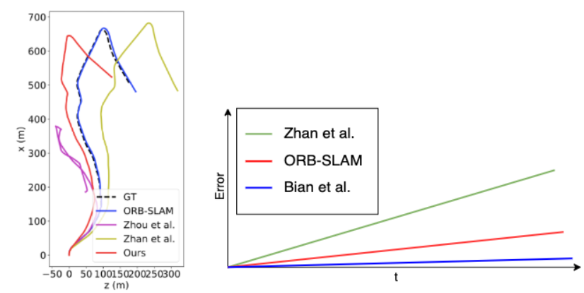
Therefore modelling the error of the state (i.e. error-state) is more likely that will be model correctly by a linear model. We can avoid some noise coming from trying to model highly non-linear behavior by modelling the error-state.
We can think of the true state True value status variable as composed of two parts, the nominal state Name state variable and the error state Error state variable . We can continuously update the nominal state by integrating the motion model and modelling errors and process noise accumulate into the error state. And finally correct the nominal state with error state, then reset the error state to zero each time.
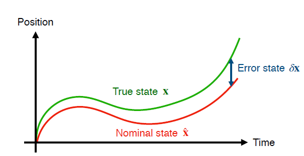
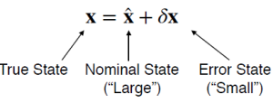
Advantages,
The “small” error state is more amenable to linear filtering than the “large” nominal state, which can be integrated nonlinearly → Better performance compared to the vanilla EKF
easy to work with constrained quantities (e.g., rotations in 3D)
easy to work with Jacobian matrix (2nd order of error state can be ignored.)
Error-state Kinematics for IMU-driven systems
Given the IMU measurement angle velocity  and linear acceleration
and linear acceleration  , and GNSS, Video or Lidar measurement as complementary sensory data. We want to keep track of state
, and GNSS, Video or Lidar measurement as complementary sensory data. We want to keep track of state  . Then how to write the error-estate equations of the kinematics of an inertial system?
. Then how to write the error-estate equations of the kinematics of an inertial system?
Tips
T hese complementary data are quite important, otherwise we can never get the observation of the error-state for this IMU specific problem. Since we've already use the IMU measurement as input vector in the prediction function, the bias and noise should be corrected by other sensor observation so as to eliminate the IMU drifting problem.
However, it doesn't mean the error state of ESEKF must be estimated by other data source. If you have different problem, e.g. tracking the resistance of some electronic device or tracking the flying ball.
System kinematics in continuous time (the Euler approx. form)
In order to write the state prediction function or state transition function, we should first study the kinematics equation of IMU.
The true-state kinematics
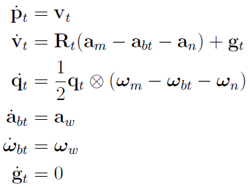
where this equation describes the relationship between IMU measurement and the state derivative against time, the subscript "t" means true state, the subscript "m" means measurement from IMU, the subscript "b" means bias, the subscript "w" means bias noise/stability and the subscript "n" means noise for acceleration or angles rate. We can get the true state with time integration quite easily. The gravity vector is considered so that we have reference frame for the IMU initial pose. The initial rotation is against the ground surface and we can set  .
.
The nominal-state kinematics
The nominal-state kinematics corresponds to the modeled system without noises or perturbations → bias and noise are zero.
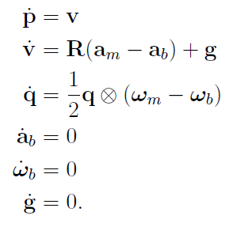
The error-state kinematics
The goal is to determine the linearized dynamics of the error-state. For each state equation, we simplify all second-order infinitesimals. We give here the full error-state dynamic system and ignore the proofs in case of getting lost in math. (see, Quaternion kinematics for the error-state Kalman Filter).
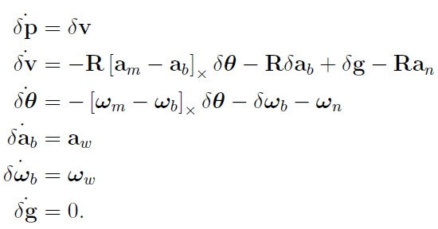
System kinematics in discrete time
The differential equations above need to be integrated into differences equations to account for discrete time intervals  . Integration needs to be done for the following sub-systems,
. Integration needs to be done for the following sub-systems,
The nominal state.
The error-state.
The deterministic part: state dynamics and control.
The stochastic part: noise and perturbations.
We can write the differences equations of the nominal-state as,
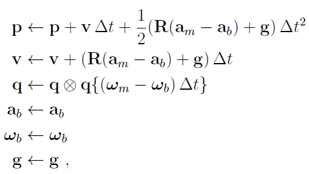
And the error-state kinematics as,
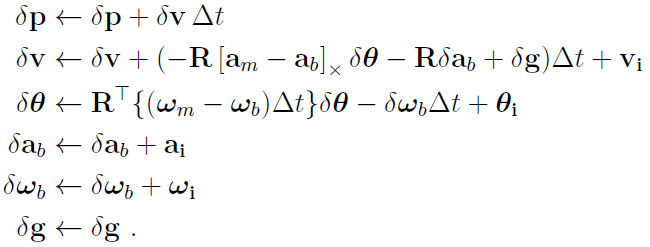
where its deterministic part is integrated normally, and the integration of the stochastic part results in random impulses. Here  ,
,  ,
,  ,
,  are the random impulses applied to the velocity, orientation and bias estimates, modeled by white Gaussian processes. Their mean is zero, and their covariances matrices are obtained by integrating the covariances of
are the random impulses applied to the velocity, orientation and bias estimates, modeled by white Gaussian processes. Their mean is zero, and their covariances matrices are obtained by integrating the covariances of  ,
,  ,
,  and
and  . Hence, the ESEKF treats these noise as white noise gaussian distribution and won't be updated.
. Hence, the ESEKF treats these noise as white noise gaussian distribution and won't be updated.
ESEKF Prediction Equation
Based on the error-state kinematics f(.) or F in discrete time above, we can write the motion equation or state transition equation of error state as,
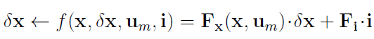
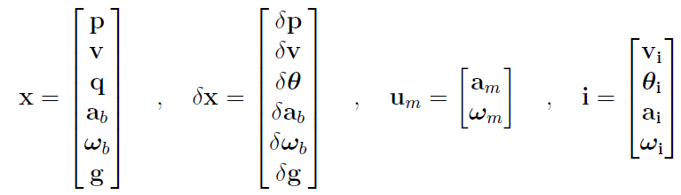
where  is input vector and vector i is the perturbation impulses. The ESKF prediction equations are written:
is input vector and vector i is the perturbation impulses. The ESKF prediction equations are written:
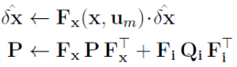
And actually we can ignore the equation of  , because this error term will be reset after each update iteration. So the mean estimation of the motion equation is useless. However, the covariance estimation of motion equation is quite important, it will control the distribution of error estimation.
, because this error term will be reset after each update iteration. So the mean estimation of the motion equation is useless. However, the covariance estimation of motion equation is quite important, it will control the distribution of error estimation.
As mentioned earlier, our error-state kinematics has already dropped the second-order infinitesimals. Hence the function  is already the linearized Jacobian function of state between current and previous time.
is already the linearized Jacobian function of state between current and previous time.
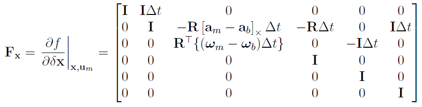
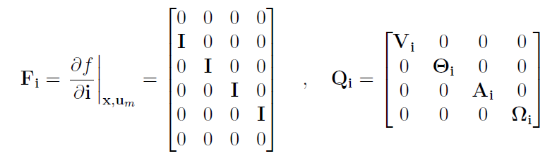
Tips:
The Jacobian function Fx is different between EKF and ESEKF. EKF →
 , ESEKF →
, ESEKF → 
The Jacobian function Hx is also different between EKF and ESEKF (see next section).
ESEKF Update Equation (with complementary sensory data)
At the arrival of other kind of information than IMU, such as GPS or vision, we proceed to correct the ESKF. In a well-designed system, this should render the IMU biases observable and allow the ESKF to correctly estimate them. While the IMU information has served so far to make predictions to the ESKF, this other information is used to correct the filter, and thus observe the IMU bias errors. The correction consists of three steps:
observation of the error-state via filter correction
injection of the observed errors into the nominal state, and
reset of the error-state
Suppose as usual that we have a sensor that delivers information that depends on the state, such as  , where h(.) is a general nonlinear function of the system state (the true state), and v is a white Gaussian noise with covariance V, v~N(0,V).
, where h(.) is a general nonlinear function of the system state (the true state), and v is a white Gaussian noise with covariance V, v~N(0,V).
Our filter is estimating the error state, and therefore the filter correction equations,
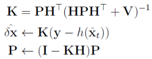
where the measurement y of this IMU case comes from complementary sensory data, e.g. Lidar or GNSS or Video. Please pay attention to the Jacobian matrix H, it is defined with respect to the error state  .
.
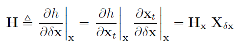
Here,  is the standard Jacobian of h() with respect to its own argument. This first part
is the standard Jacobian of h() with respect to its own argument. This first part  of the chain rule depends on the measurement function of the particular sensor used, and is not presented here. The second part
of the chain rule depends on the measurement function of the particular sensor used, and is not presented here. The second part  is the Jacobian of the true state with respect to the error state.
is the Jacobian of the true state with respect to the error state.
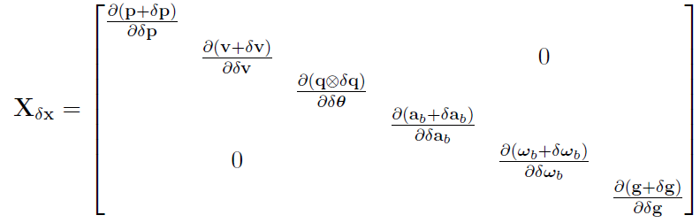
which results in all identity 3x3 blocks e.g.  , except for the 4x3 quaternion term.
, except for the 4x3 quaternion term.
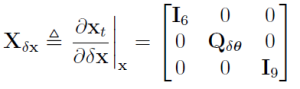
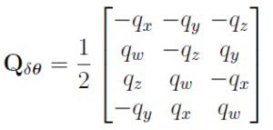
After the ESKF update, the nominal state gets updated with the observed error state using the appropriate compositions,
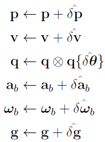
After error injection into the nominal state, the error state mean  gets reset. The ESKF error reset operation is thus,
gets reset. The ESKF error reset operation is thus,
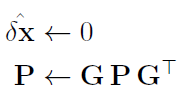
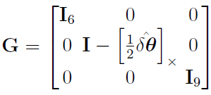
Complete ESEKF Algorithm Loop
Loop:
1. Update nominal state with motion model, depends on whether we've got measurement update or not, the p osterior or prior state estimation will be used in the motion equation. (This is not the prediction function of ESEKF, totally different!)
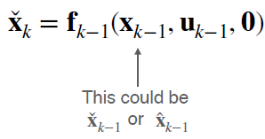
2.Error state uncertainty propagates, depends on whether we've got measurement update or not, the p osterior or prior covariance estimation will be used in the covariance estimation equation. Here the F is the linearized Jacobian about error state.
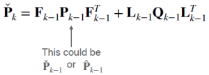
3.If the measurement is unavailable, go back to 1. otherwise,
3.1 Compute Kalman Gain
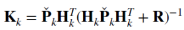
3.2 Compute error state, the measurement y of this IMU case comes from complementary sensor.
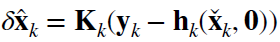
3.3 Correct nominal state
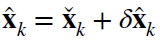
3.4 Correct state covariance
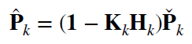
3.5 Reset the error state → seems we don't need do anything, the error state will be overwritten for each update.
3.6 go back to step 1
Code Study
IMU demo
Task description:
Given IMU measurement and complementary sensor data (replaced by ground truth trajectory for simplicity)
Keep track of [p, v, q, ba, bg, g]
Prediction Step
predict the nominal state and the error state covariance.
def predict(self, imu_measurement: np.array): """ :param imu_measurement: [t, w_m, a_m] :return: """ if self.last_predict_time == imu_measurement[0]: return # we predict error_covar first, because __predict_nominal_state will change the nominal state. self.__predict_error_covar(imu_measurement) self.__predict_nominal_state(imu_measurement) self.last_predict_time = imu_measurement[0] # update timestampnominal state prediction (the motion function, without considering noise and bias)
see nominal state in system kinematics in discrete time section. however, the integration is based on RK4 method rather than Euler method.
def __predict_nominal_state(self, imu_measurement: np.array): p = self.nominal_state[:3].reshape(-1, 1) q = self.nominal_state[3:7] v = self.nominal_state[7:10].reshape(-1, 1) a_b = self.nominal_state[10:13].reshape(-1, 1) w_b = self.nominal_state[13:16] g = self.nominal_state[16:19].reshape(-1, 1) w_m = imu_measurement[1:4].copy() a_m = imu_measurement[4:7].reshape(-1, 1).copy() dt = imu_measurement[0] - self.last_predict_time """ dp/dt = v dv/dt = R(a_m - a_b) + g dq/dt = 0.5 * q x(quaternion product) (w_m - w_b) a_m and w_m are the measurements of IMU. a_b and w_b are biases of acc and gyro, respectively. R = R{q}, which bring the point from local coordinate to global coordinate. """ w_m -= w_b a_m -= a_b # use the zero-order integration to integrate the quaternion. # q_{n+1} = q_n x q{(w_m - w_b) * dt} angle = la.norm(w_m) axis = w_m / angle R_w = tr.rotation_matrix(0.5 * dt * angle, axis) q_w = tr.quaternion_from_matrix(R_w, True) q_half_next = tr.quaternion_multiply(q, q_w) R_w = tr.rotation_matrix(dt * angle, axis) q_w = tr.quaternion_from_matrix(R_w, True) q_next = tr.quaternion_multiply(q, q_w) if q_next[0] < 0: # force the quaternion has a positive real part. q_next *= -1 # use RK4 method to integration velocity and position. # integrate velocity first. R = tr.quaternion_matrix(q)[:3, :3] R_half_next = tr.quaternion_matrix(q_half_next)[:3, :3] R_next = tr.quaternion_matrix(q_next)[:3, :3] v_k1 = R @ a_m + g v_k2 = R_half_next @ a_m + g # v_k3 = R_half_next @ a_m + g # yes. v_k2 = v_k3. v_k3 = v_k2 v_k4 = R_next @ a_m + g v_next = v + dt * (v_k1 + 2 * v_k2 + 2 * v_k3 + v_k4) / 6 # integrate position p_k1 = v p_k2 = v + 0.5 * dt * v_k1 # k2 = v_next_half = v + 0.5 * dt * v' = v + 0.5 * dt * v_k1(evaluate at t0) p_k3 = v + 0.5 * dt * v_k2 # v_k2 is evaluated at t0 + 0.5*delta p_k4 = v + dt * v_k3 p_next = p + dt * (p_k1 + 2 * p_k2 + 2 * p_k3 + p_k4) / 6 self.nominal_state[:3] = p_next.reshape(3,) self.nominal_state[3:7] = q_next self.nominal_state[7:10] = v_next.reshape(3,) # print(q_next)predict the covariance of error state
see error state in system kinematics in discrete time section. however, the transition matrix F is calculated based on 3rd-order truncated integration.
def __predict_error_covar(self, imu_measurement: np.array): w_m = imu_measurement[1:4] a_m = imu_measurement[4:7] a_b = self.nominal_state[9:12] w_b = self.nominal_state[12:15] q = self.nominal_state[3:7] R = tr.quaternion_matrix(q)[:3, :3] F = np.zeros((18, 18)) F[0:3, 6:9] = np.eye(3) F[3:6, 3:6] = -tr.skew_matrix(w_m - w_b) F[3:6, 12:15] = -np.eye(3) F[6:9, 3:6] = -R @ tr.skew_matrix(a_m - a_b) F[6:9, 9:12] = -R # use 3rd-order truncated integration to compute transition matrix Phi. dt = imu_measurement[0] - self.last_predict_time Fdt = F * dt Fdt2 = Fdt @ Fdt Fdt3 = Fdt2 @ Fdt Phi = np.eye(18) + Fdt + 0.5 * Fdt2 + (1. / 6.) * Fdt3 """ use trapezoidal integration to integrate noise covariance: Qd = 0.5 * dt * (Phi @ self.noise_covar @ Phi.T + self.noise_covar) self.error_covar = Phi @ self.error_covar @ Phi.T + Qd operations above can be merged to the below for efficiency. """ Qc_dt = 0.5*dt*self.noise_covar self.error_covar = Phi @ (self.error_covar + Qc_dt) @ Phi.T + Qc_dtMeasurement Update Step
compute Kalman gain
update error covariance matrix
compute state errors → difference between gt and nominal state
inject errors to the nominal state
reset errors to zero and modify the error covariance matrix
def update(self, gt_measurement: np.array, measurement_covar: np.array): """ :param gt_measurement: [p, q], a 7x1 or 1x7 vector :param measurement_covar: a 6x6 symmetrical matrix = diag{sigma_p^2, sigma_theta^2} :return: """ """ we simulate a system that measure the errors between the nominal state and ground-truth state directly, so that we can avoid the direct subtracting of quaternions. we define q1 - q2 = conjugate(q2) x q1, so that q2 x (q1 - q2) = q1. ground_truth - nominal_state = delta = H @ error_state + noise """ H = np.zeros((6, 18)) H[0:3, 0:3] = np.eye(3) H[3:6, 3:6] = np.eye(3) PHt = self.error_covar @ H.T # 18x6 # compute Kalman gain. HPH^T, project the error covariance to the measurement space. K = PHt @ la.inv(H @ PHt + measurement_covar) # 18x6 # update error covariance matrix self.error_covar = (np.eye(18) - K @ H) @ self.error_covar # force the error_covar to be a symmetrical matrix self.error_covar = 0.5 * (self.error_covar + self.error_covar.T) # compute the measurements according to the nominal state and ground-truth state. if gt_measurement[3] < 0: gt_measurement[3:7] *= -1 gt_p = gt_measurement[0:3] gt_q = gt_measurement[3:7] q = self.nominal_state[3:7] delta = np.zeros((6, 1)) delta[0:3, 0] = gt_p - self.nominal_state[0:3] delta_q = tr.quaternion_multiply(tr.quaternion_conjugate(q), gt_q) if delta_q[0] < 0: delta_q *= -1 angle = math.asin(la.norm(delta_q[1:4])) if math.isclose(angle, 0): axis = np.zeros(3,) else: axis = delta_q[1:4] / la.norm(delta_q[1:4]) delta[3:6, 0] = angle * axis # compute state errors. errors = K @ delta # inject errors to the nominal state self.nominal_state[0:3] += errors[0:3, 0] # update position dq = tr.quaternion_about_axis(la.norm(errors[3:6, 0]), errors[3:6, 0]) # print(dq) self.nominal_state[3:7] = tr.quaternion_multiply(q, dq) # update rotation self.nominal_state[3:7] /= la.norm(self.nominal_state[3:7]) if self.nominal_state[3] < 0: self.nominal_state[3:7] *= 1 self.nominal_state[7:] += errors[6:, 0] # update the rest. """ reset errors to zero and modify the error covariance matrix. we do nothing to the errors since we do not save them. but we need to modify the error_covar according to P = GPG^T """ G = np.eye(18) G[3:6, 3:6] = np.eye(3) - tr.skew_matrix(0.5 * errors[3:6, 0]) self.error_covar = G @ self.error_covar @ G.TSensor fusion between IMU, GNSS and Lidar (Cousera Homework)
Assumptions:
1. LIDAR provides positions in the same reference frame as GNSS (possible)
2. IMU has no biases (not realistic!)
3. State initialization is provided (realistic)
4. Our sensors are spatially and temporally aligned (somewhat realistic)
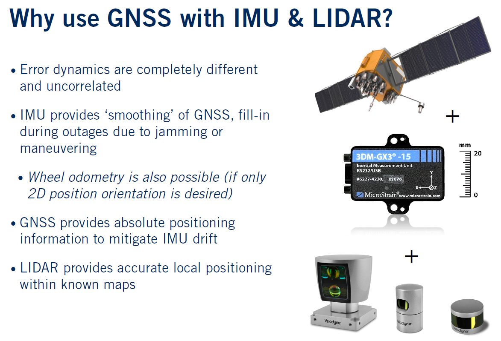
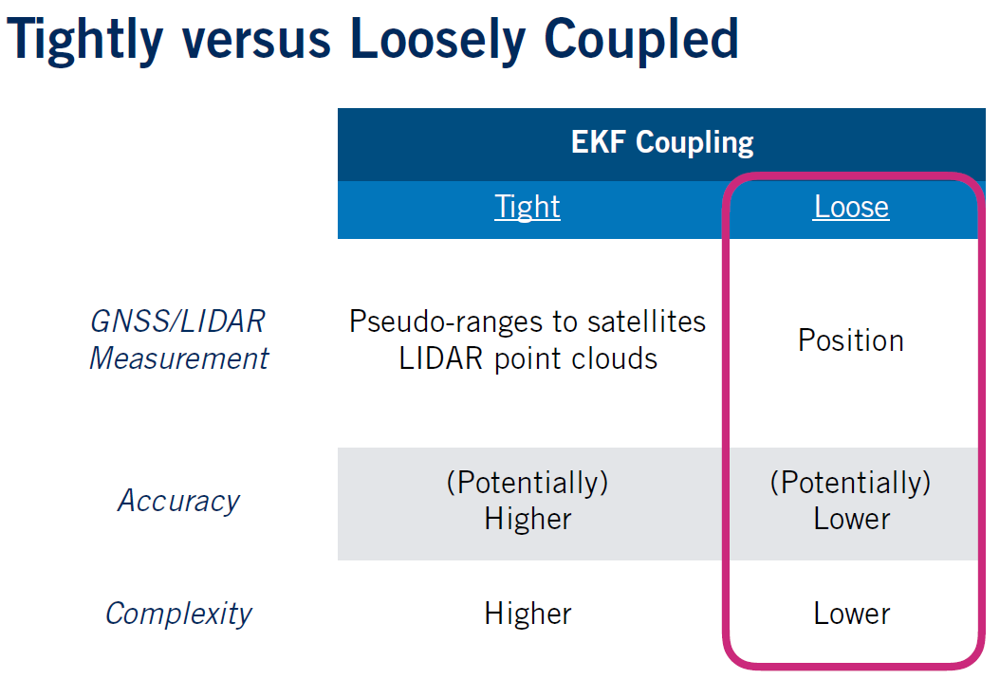
This code will is based on loosely coupled solution, otherwise you have to deal with pseudo-range from satellites.
The IMU is corrected by GNSS or Lidar.
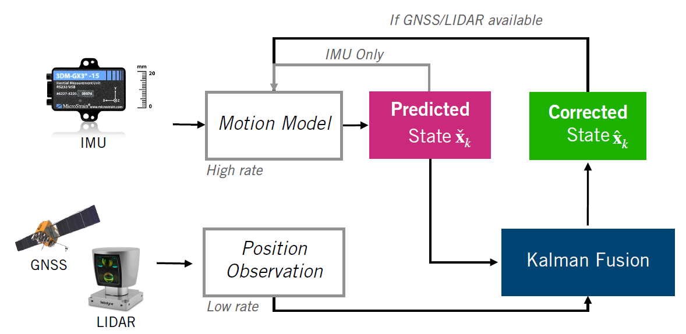